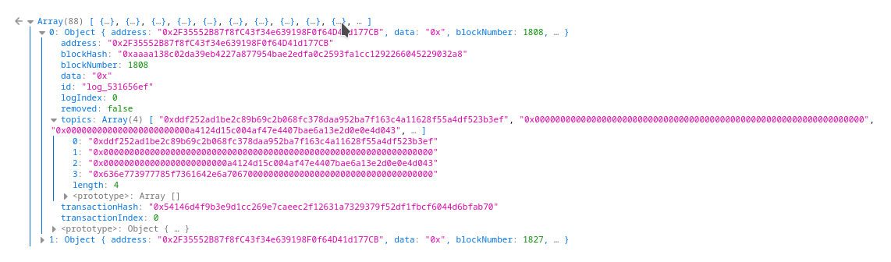
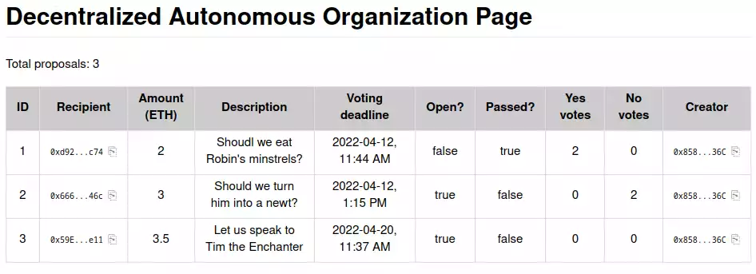

Go up to the CCC HW page (md) | view one-page version
In this assignment you are going to create a Decentralized Autonomous Organization (DAO). The DAO will issue NFT tokens (that you created in the Ethereum Tokens (md) assignment) to keep track of who are members, allow members to submit proposals, and allow voting on those proposals. For the purposes of this assignment, a proposal consists of a reason (which can be any string), an amount to pay, and an account address to pay it to. You will then make a Web3 interface for this DAO that will allow anybody with a standard web browser to see the status of the DAO and the proposals. The web page will only read from the blockchain using the web3.js library.
Beyond general experience with programming Solidity (which you have at this point it the course), this assignment requires:
In addition to your source code, you will submit an edited version of daoweb3.py (src).
NOTE: The Javascript code you develop herein does not work for all browsers. We know it works on Firefox and Chrome, and that it does not work fully on Safari. Note that you will need Chrome for the Metamask homework.
Any changes to this page will be put here for easy reference. Typo fixes and minor clarifications are not listed here. So far there aren’t any significant changes to report.
A Decentralized Autonomous Organization (DAO) allows members to submit and vote on proposals. For the purposes of this assignment, these proposals always have some amount of ether associated with them. A proposal is whether to pay the amount of ether to a particular account address, which is also specified in the proposal. One example of what to use a DAO for is a charity organization that focuses on one particular type of area (education, environment, etc.): members vote on what to donate money to (and how much to donate), and a successful proposal means that organization receives the amount of ether specified in the proposal.
As far as this assignment is concerned, we are not concerned as to what your DAO is for, only that it works.
Your contract must implement the provided IDAO interface below. Your contract opening line must be: contract DAO is IDAO {. This interface was adapted from the open-source code for The ÐAO, but was heavily modified to both work with current versions of Solidity and to fit better with this assignment. In particular, we removed a number of features, since this assignment is really about Web3; what was removed included splitting off a sub-DAO, including transaction data in the proposal, anything relating to quorum or quorum modifications, blocking members, vote freezes, etc. In a real DAO, these would need to be implemented as well.
The file is IDAO.sol (src). That file has many comments to explain how it works; those comments are not shown below.
// SPDX-License-Identifier: GPL-3.0-or-later
import "./IERC165.sol";
pragma solidity ^0.8.24;
interface IDAO is IERC165 {
// A struct to hold all of our proposal data
struct Proposal {
address recipient; // The address where the `amount` will go to if the proposal is accepted
uint amount; // The amount to transfer to `recipient` if the proposal is accepted.
string description; // The amount to transfer to `recipient` if the proposal is accepted.
uint votingDeadline; // A UNIX timestamp, denoting the end of the voting period
bool open; // True if the proposal's votes have yet to be counted, otherwise False
bool proposalPassed; // True if the votes have been counted, and the majority said yes
uint yea; // Number of Tokens in favor of the proposal; updated upon each yea vote
uint nay; // Number of Tokens opposed to the proposal; updated upon each nay vote
address creator; // Address of the shareholder who created the proposal
}
//------------------------------------------------------------
// These are all just public variables; some of which are set in the
// constructor and never changed
function proposals(uint i) external view returns (address,uint,string memory,uint,bool,bool,uint,uint,address);
function minProposalDebatePeriod() external view returns (uint);
function tokens() external view returns (address);
function purpose() external view returns (string memory);
function votedYes(address a, uint pid) external view returns (bool);
function votedNo(address a, uint pid) external view returns (bool);
function numberOfProposals() external view returns (uint);
function howToJoin() external view returns (string memory);
function reservedEther() external view returns (uint);
function curator() external view returns (address);
//------------------------------------------------------------
// Functions to implement
receive() external payable;
function newProposal(address recipient, uint amount, string memory description,
uint debatingPeriod) external payable returns (uint);
function vote(uint proposalID, bool supportsProposal) external;
function closeProposal(uint proposalID) external;
function isMember(address who) external view returns (bool);
function addMember(address who) external;
function requestMembership() external;
// also supportsInterface() from IERC165
// Events to emit
event NewProposal(uint indexed proposalID, address indexed recipient, uint indexed amount, string description);
event Voted(uint indexed proposalID, bool indexed position, address indexed voter);
event ProposalClosed(uint indexed proposalID, bool indexed result);
}This may look like a lot, but it’s not quite as much as it seems:
supportsInterface())newProposal(), vote(), and closeProposal()The files you will need are:
You will need the IDAO.abi file, which contains the ABI for the IDAO interface – you’ll need this when writing your Javascript code to interact with the interface.
You will also need your NFTManager.sol file from the Ethereum Tokens (md) assignment, and any other .sol files that are needed to allow that to compile (such as ERC721.sol, Strings.sol. Address.sol, etc.).
The requirements on this section are intentionally vague – the intent is to let you program your DAO any way you want. The only requirement is that your DAO must fulfill the spirit of the IDAO.sol (src) interface. As far as we are concerned, a proposal description primarily consists of a single string – perhaps it’s a URL, perhaps a statement, etc.
Don’t overthink this! The intent is just for you to get a working DAO. It doesn’t have to be perfect. In fact, this is the easier part of this homework, since we’ve all written a bunch of Solidity programs by now. The longest methods here are 8 lines.
newProposal() call. However, that function must ensure that the DAO has enough ether for the proposal. One can imagine a number of calls to fund the DAO (a noraml ether transfer, which kicks off receive()), followed by a newProposal() that does not have any ether transferred in along with it. Alternatively, one can send in ether with a newProposal() call as well.requestMembership(): in a real application, this would put them into a list for the owner(s) to approve or deny. For our uses, this will automatically allow the caller (msg.sender) to be a member of the DAO. This functionality is for grading purposes. This function should revert if the caller is already a member.tokens(), mint themselves an NFT, and then become a member of the DAO. We could secure this by only allowing the deployer to mint NFTs, and since the DAO contract is the deployer, nobody else could use this technique to gain membership. But since we are allowing anybody to join via requestMembership(), that is not necessary here. But you are welcome to implement that if you would like.constant variable if the value is not going to change. This is done via uint constant public override minProposalDebatePeriod = 600;. This saves gas versus not having it be a constantreceive() works – this was described in the “Background” section of the DEX assignment (md)tokens field is just an address of your NFTmanager, and you will have to cast it to call a function: NFTmanager(tokens).mintWithURL(...);, for example.payable function, enter the amount in the “Value” box of the deployment pane, choose the right denomination, and click the “Transact” button in the “Low level interactions” box at the bottom of the deployed contract info. This works in any of the deployment environments. Note that this will call your receive() function (which doesn’t have to do anything for this assignment, but it must be there).personal.newAccount() in geth) to use as recipients. Or send it to a classmate’s account. Or send it to the faucet account. Any of those is fine.Your NFTManager, from the Ethereum Tokens (md) assignment, should have required a unique URI for each NFT minted. For this assignment we don’t care what the URI is, only that they have a NFT. In particular, for this assignment, the URI does not need to resolve to an actual image. This also means that you don’t have to change the _baseURI() function from what you wrote in the previous assignment. For that matter, you don’t have to change anything in your NFTManager.sol file at all for this assignment (assuming you got it working).
However, you still have to have a unique URI for each one. One way to do this is to use their account address. The Strings.sol (src) file was used in the Ethereum Tokens (md) assignment (it was imported by ERC721.sol (src)). You will also need Math.sol (src) for Strings.sol to compile. Strings.sol has a toHexString() function that takes in an address as a parameter. This function will convert the address into an ASCII hex string with the leading ‘0x’. However, this hex string will be 42 characters long, and our NFTManager doesn’t allow more than 32 character strings. You can use the following substring() method to reduce it to a 32 character string:
function substring(string memory str, uint startIndex, uint endIndex) public pure returns (string memory) {
bytes memory strBytes = bytes(str);
bytes memory result = new bytes(endIndex-startIndex);
for(uint i = startIndex; i < endIndex; i++)
result[i-startIndex] = strBytes[i];
return string(result);
}You would call it such as:
string memory uri = substring(Strings.toHexString(addr),2,34);Everybody is going to have a different URL. To lessen the temptation, you have to put a (mostly) secret suffix as part of your URL.
We realize this part is going to be rather annoying, but we all have to do it.
To determine your URL:
dao_XXXXXXXX.html, where the X’s are the 8 hex digitshttps://www.cs.virginia.edu/~mst3k/dao_XXXXXXXX.htmlAs an example, consider one of the course accounts, 0xd0958cecfa9ee438c6c6b6e7a2295866065c4c59
0xD0958CECfa9Ee438C6c6B6E7A2295866065c4C59dao_fe2a2995.htmlWhen submitting the file, the auto-grader will check the suffix as well.
The following code, contained in get-url-ext.py (src) will compute this value as well. You have to pip install both web3 and pysha3 for this code to work.
# to run this, first: `pip install web3 pysha3`
import sys, web3, sha3
# sanity checks
assert len(sys.argv) == 2, "Must supply one parameter, the eth.coinbase account"
assert int(web3.__version__.split('.')[0]) >= 6, "You must install web3 version 6.0.0 or greater to run this code"
# compute and print out the suffix
checksummed = web3.Web3.to_checksum_address(sys.argv[1])
hash = sha3.keccak_256(bytes(checksummed,'ASCII'))
suffix = hash.hexdigest()[:8]
print("dao_"+suffix+".html")You do not need to understand how that code works for this homework – you’ll be seeing all that code, and more, in the next homework.
Usage:
$ python3 get-url-ext.py 0xd0958cecfa9ee438c6c6b6e7a2295866065c4c59
dao_fe2a2995.html
$You are going to write a web interface that shows the status of your DAO and the proposals therein. This web page will only read from the blockchain.
There are a few strict requirements for this section: all of your code – both HTML and Javascript – must be in a single file called dao_XXXXXXXX.html. That file must be in your ~/public_html/ directory on your CS server account. This means that the URL for your page will be https://www.cs.virginia.edu/~mst3k/dao_XXXXXXXX.html, where mst3k is your userid.
This is not a class on user interfaces, so we are not expecting an amazing looking website – we are going to grade it on the functionality, not the appearance. That being said, it needs to be readable and navigable.
Log into your CS server account. You can try using ssh from the command line: ssh mst3k@portal.cs.virginia.edu (works in Linux, Mac OS X, and Windows Subsystem for Linux). You can also download SecureCRT, which is a GUI ssh client.
You will likely want to edit the file on your home computer and copy it over to the CS servers to test it.
dao_XXXXXXXX.html that just has hello world as the contents (we don’t need HTML tags for now)scp on the command line: scp dao_XXXXXXXX.html mst3k@portal.cs.virginia.edu:~/public_html/ (works for Linux, Mac OS X, and WSL)View the web page at https://www.cs.virginia.edu/~mst3k/dao_XXXXXXXX.html, changing mst3k for your userid
Copy a few files over: while all of your code must be in a single file, you are going to include the web3.js library. To put that into the correct place on portal, execute the following commands ON portal.cs:
mkdir -p ~/public_html/
cd ~/public_html/
chmod 711 .
wget https://raw.githubusercontent.com/web3/web3.js/1.x/dist/web3.min.js
wget https://raw.githubusercontent.com/web3/web3.js/1.x/dist/web3.min.js.mapIf you go to your home page on the departmental viewer, you can see all the files in the directory listing that shows up. To prevent this, we are going to create a default (and empty) index.html file. On the departmetnal server, you can just run touch ~/public_html/index.html.
NOTE: If you already have a web page present, or otherwise have prevented (intentional or not) directory viewing, then no further steps are needed.
You are encouraged to look at the examples of web3 usage provided so far in class, and to copy/adapt the code therein. Note that you can copy from the materials provided by the course, NOT your classmates! The ones we have seen are:
The links to all of these are on the Canvas landing page.
You are welcome to look at the blockchain explorer code as well, but that won’t be as useful for this assignment – there is no web3 done by the explorer web page. When you go to each of the pages listed above (and, if necessary, enter a valid smart contract address), you can view the page source to see what is going on. Loading up the developer console make make it easier to view the code, and – later on – see any Javascript errors. Note that while these example URLs have an extension of .php, what you are viewing is still HTML and Javascript.
async and awaitMost function calls execute quickly. But some, such as those querying a blockchain, can take some time to return a value. In Javascript, these are called async functions. While async functions might execute quickly, Javascript assumes they will take some time. You have two options here – you can either tell Javascript to wait for the call to return, or give it a code block to execute whenever it does return. If you choose the first option, it will hang until that async call completes. If you choose the second option, it will move on, and later (in another thread) execute that code block when the async call does finally complete.
Consider the following Javascript code; this is from poll.php, which was used to display the Poll of your smart contract from the dApp Introduction (md) assignment.
var contractAddress = '0x01234567890abcdef01234567890abcdef012345';
let web3 = new Web3('URL');
abi = [...]; // the source has the full ABI, which is removed here for clarity
contract = new web3.eth.Contract(abi,contractAddress);
const getNumChoices = async() => {
return await contract.methods.num_choices().call();
}
const getChoiceInfo = async(i) => {
let x = await contract.methods.choices(i).call();
return [x.name,x.votes];
}
const setChoiceInfo = async(i) => {
getChoiceInfo(i).then(l => { document.getElementById("choice_"+i).innerHTML = l[0];
document.getElementById("votes_"+i).innerHTML = l[1];
// this next line is not thread-safe!!!
document.getElementById("total_votes").innerHTML = parseInt(document.getElementById("total_votes").innerHTML) + parseInt(l[1]);
});
}Four variables are defined:
contractAddress line is the hard-coded address of the Poll smart contract. You should also hard-code the address, although this will mean editing the HTML file if you re-deploy it to a different smart contract addressweb3 variable is the connection to the geth node itself. The value for URL is provided on the Canvas landing page. Note that the value for URL must be in quotes.abi variable is the ABI for the contract itself. This should be replaced by the entire ABI, not just [...]. You can obtain this via Remix – in the Compilation tab, after you compile, there is a copy link next to the text “ABI” at the bottom of that pane. Note that you will have to remove all white space in what you copy from Remix. You can also copy the ABI for this assignment from the Canvas landing page.contract variable is the connection to the specific smart contract that we are accessing.You will notice that many of the fields and methods here are the same as in geth. Indeed, what we call web3.eth.blockNumber here is just eth.blockNumber in geth. They are also the same steps we’ve used before to call a function from geth – we saw this in the Debtors example, and those commands are listed in the Geth reference document (md).
We then define three async functions:
getNumChoices() is a function that takes in no parameters (the parameters – or lack thereof – are listed in the parenthesis after the async keyword). This calls the num_choices getter function in the Poll.sol contract, which implements the IPoll.sol interface. Note that we have to put await in front of it, since that is also an async call, and we wait it to wait (aka block) until the function eventually returns. And, unlike in geth, we put parentheses both after num_choices and after call. This function waits until num_choices() returns, and then returns that value.getChoiceInfo() is a function that takes in one parameter, the choice ID – that parameter is indicated in the parenthesis after the async keyword. This calls choices() which is a getter function for the Choice struct from Poll.sol. Note that this function also waits (blocks) until that call completes, as indicated by the await keyword. The obtained struct has three fields – id, name, and votes. This function returns two of them in a list.setChoiceInfo() is a function that takes in one parameter, the choice ID – that parameter is indicated in the parenthesis after the async keyword. This function calls getChoiceInfo() to get the Choice fields from the smart contract. You will notice the .then( part – we are specifying the code block to execute when the async call returns. This function will not block – it kicks off the call to getChoiceInfo(), and immediately returns. Once getChoiceInfo() does return the data (remember: a list containing the name and votes of the choice), it will execute the code block. Note the l => part – this is binding the return value from getChoiceInfo(), which is a list, to the variable l, which is then used in the code block. The details of the code block will be discussed below, but it basically updates a few fields of the HTML page.To call this code, we use the following:
function loadTable() {
// The "main" part of this script -- once we know how many choices there are.
document.getElementById("total_votes").innerHTML = "0";
getNumChoices().then(val => {
// set that value in the "Total number of choices:" paragraph
document.getElementById("num_choices").innerHTML = val;
// create the table body to list the votes and choices
text = "<tr><th>ID</th><th>Votes</th><th>Choice</th></tr>";
// for each of the choices, create a separate table row with unique IDs
for ( var i = 0; i < val; i++ )
text += "<tr><td id='id_" + i + "'>" + i + "</td><td id='votes_" + i + "'></td><td id='choice_" + i + "'></td></tr>";
// write the table to the HTML page; this must happen BEFORE we start filling in the votes and choices
document.getElementById("choice_list").innerHTML = text;
// call the async function that will fill in the number of votes and choices into the table
for ( var i = 0; i < val; i++ )
setChoiceInfo(i);
});
getPurpose().then(val => {
// update the purpose field
document.getElementById("purpose").innerHTML = val;
});
}
loadTable();We’ll get to document.getElementById() shortly, but it’s just updating part of the HTML page. You will notice that this calls getNumChoices(), an async function, and gives it a code block to execute when that function does return. Like Python, there is no main() function, so we have to call loadTable() to kick all this off.
As mentioned above, you are encouraged to use the code provided in the pages that the course has used so far. A number of Javascript functions therein will be of use in formatting your display – in particular, convertTimestamp(), short_hash(), and copy_link().
Your web browser can load up the developer window (ctrl-shift-C, perhaps). This window has a Console tab, which is quite useful for debugging Javascript. You will likely have to reload the page after you have opened up the developer window. This console is just like the geth console – you can type Javascript commands into it, and access variables that were defined in the <script> sections of your webpage. In your Javascript code, you can use console.log() to print out values to this Javascript console. This is useful in debugging, and can be called from regular and async functions.
We assume you are familiar with the basics of HTML. If not, you can quickly come up to speed with an appropriate web search.
Below is some sample HTML code to start with:
<!DOCTYPE HTML>
<html lang="en">
<head>
<title>DAO Information</title>
<meta charset="utf-8">
<script src="web3.min.js"></script>
<style></style>
</head>
<body style="margin-top:0">
<h2>DAO Information</h2>
<p>The DAO information is:</p>
<p>Total proposals: <span id="total_proposals">loading...</span></p> <!-- line 12 -->
<table id="dlist center"></table>
<script>
// Javascript code here
</script>
</body>
</html>A few notes:
<!-- and end with -->; you don’t have to use them, but you’ll see comments throughout the example code<style></style> tags – you can leave it blank or cut-and-paste the style information from any of the above mentioned reference pages (choices.php, debts.php, auctions.php, or dex.php) – they all have the same CSS code.loadTable() Javascript function adds them.getNumChoices() function), you can update that value via the code document.getElementById('total_proposals').innerHTML = var;, where var is the Javascript variable that holds the number of proposals. This looks for the element with the id of total_proposals, which is the <span> element on line 12, and updates the value inside (meaning it replaces “loading…”).There are multiple ways to see when something happens on a blockchain, and they all involve listening for events that were emitted by the contracts (or the EVM itself).
A web3 subscription is when the web3 library is listening for an event or multiple events. To do so, we specify the specific contract that we are listening to. Consider the following code:
function subscribeToPollEvents() {
var options = { address: '0x01234567890abcdef01234567890abcdef012345' };
var sub = web3.eth.subscribe('logs', options, function(err,event) {
if ( !err )
console.log("event error: "+event);
});
// pay attention to these subscription events:
sub.on('data', event => loadTable() )
sub.on('error', err => { throw err })
}
subscribeToChoiceEvents();There are a number of things going on here:
options variable is just the options that we are specifying – in this case, we are only specifying the address of the contract. Again, we can hard-code the contract address, but will have to change it here as well if we re-deploy our smart contract. You can also use the contractAddress Javascript variable defined above. If you wanted to listen to multiple contracts, you could put their address in a list (Javascript uses square brackets for lists).sub variable is when we actually subscribe to the events. We are subscribing to all events for this contract (we could have filtered it to only some events). If there is an error, we print that in console.log() – which is viewable in the browser’s developer console. Note that, in Javascript, you can pass a function as a parameter. And, in this case, you can define that function in the parameter list itself.sub.on calls specify the particular types of things we are listening for – data events (normal events emitted from a contract) and errors (we just output that error via throw). These are the only two that we need to listen for in this assignment, but others exist, such as changed and connected.loadTable(), which we defined above. This will cause the entire table to regenerate, updating itself in the process. A more complicated script could only update parts of the table – you can see this in the dex.php code – a change to the price of our (fake) ETH will update all the columns that use that value, whereas a change in one of the DEXs will update just that row.subscribeToChoiceEvents() call, which is on the last line of the above code block – this only needs to be called once, and it will execute the code any time an event is emitted by the contract.There are a number of aspects of events that we are not covering in this assignment – in particular, one can listen for specific events, or specific events with specific parameters; see the first answer here for an example. One can also listen for the mining of a block – the dex.php code does this, as that is how it knows to update the (fake) ETH price (to see how, search for “newBlockHeaders” in the source code for dex.php). The dex.php also updates a single row when a transaction occurs.
This part is not required at all for this assignment, but was included for completeness. Feel free to skip it if you are not interested.
You can find all the past events that a contract (or many contracts) emitted. The blockchain explorer uses this to find when an NFT was minted or transferred, or when a TokenCC is minted or transferred; both emit the Transfer() event (this is done in the ERC20.sol or ERC721.sol contract). In Javascript, you use the getPastLogs() function.
As an example, we will examine a NFTManager contract. Pick any deployed NFTManager, and get it’s address. Go to any of the .php pages that already load up the web3 Javascript library. Load up the Javascript console (ctrl-shift-C). Enter the following commands, putting in the appropriate value (the address of the NFTManager we are getting the events of):
var addr='0x01234567890abcdef01234567890abcdef012345'You can then pull up the past logs via:
logs = await web3.eth.getPastLogs({fromBlock:0,toBlock:'latest',address:addr})You can then examine the logs variable by just typing logs in the Javascript console. For the course-wide NFTManager from the tokens assignment, this is the result (you may see different values, but the concepts are the same):

The relevant fields are:
address is the address of the contract that emitted the eventtopics[0] field is the hash of the name of the event. If you enter Transfer(address,address,uint256) into an online Keccak generator, you will get this exact hash. That event prototype is from the IERC721.sol (src) file.topics[1] through topics[3] contain any indexed parameters (in Transfer(), all three parameters are indexed).
from was the 0 address, which is why topics[1] is also the zero addresstopics[2] tells us it was issued to the contract at 0xa4124d15c004af47e4407bae6a13e2d0e0e4d043; you have to remove a bunch of leading zeros to get the actual addresstopics[3], and is 0x636e773977785f7361642e6a7067000000000000000000000000000000000000, which in base-10 is 44974148043982904058537301730497507547781710262921643124073893516105207513088indexed parameters in the event, they would be in the data fieldThe logs variable is a list of these entries, and one can quickly go through them in a for loop to examine what events were emitted.
Lastly, this can be done in the geth terminal as well. However, the version of Javascript in geth is quite old, and doesn’t have the async functionality, so we have to use different syntax:
var addr="0x01234567890abcdef01234567890abcdef012345"
filter=web3.eth.filter({fromBlock:0,toBlock:'latest',address:addr})
eth.getLogs(filter.options)The result, though, is (more or less) the same.
Your task is to create a dao_XXXXXXXX.html web page to display all the relevant information about the DAO’s proposals and balance. It should update every time an event is received; it can update the entire table rather than a specific row. A screen shot of the information we are looking for is below. Note that you should display this information, but the exact formatting is up to you. And if you want to display more, that’s fine too. A human is going to check this part of the assignment, so there is more leeway because it is not being auto-graded.

You don’t have to implement the copy link in the Creator column. Note that ALL of your HTML, CSS, and Javascript code must in the dao_XXXXXXXX.html file. The only thing that can be separate is the web3.js file, which is included in the HTML template above.
Once deployed, the DAO contract for your final submission should contain at least three proposals: one of which should have expired by the time the assignment is due AND ALSO called closeProposal() on it, and one which will stay open for one week after the assignment (just get the right date; we don’t care what time on that day). The third one is up to you.
As long as your web page starts the proposal IDs from 0, and increments them for each new proposal, you can view the deployed course-wide DAO to test your web page, as well as your own deployed DAO – just change the address in your dao_XXXXXXXX.html file. But be sure to change it back to your own DAO! Note that it needs to work on your DAO by the time you submit it! The address for the course-wide DAO is on the Canvas landing page.
You need to join the course-wide DAO and vote on one of the proposals. The address for the course-wide DAO is on the Canvas landing page. This DAO also follows the IDAO.sol (src) interface.
To join, you can just call requestMembership(), which will add you as a member. You then need to vote on one of the proposals. It doesn’t matter which proposal you vote on, or how you vote. Save the transaction hash from when you voted, as you will have to submit that.
You will need to fill in the various values from this assignment into the daoweb3.py (src) file. That file clearly indicates all the values that need to be filled in. That file, along with your Solidity source code, are the only files that must be submitted. The ‘sanity_checks’ dictionary is intended to be a checklist to ensure that you perform the various other aspects to ensure this assignment is fully submitted.
There are five forms of submission for this assignment; you must do all five.
Submission 1: You must deploy your DAO smart contract to our private Ethereum blockchain. It’s fine if you deploy it a few times to test it.
Submission 2: You need to have your dao_XXXXXXXX.html properly working at https://www.cs.virginia.edu/~mst3k/dao_XXXXXXXX.html, where mst3k is your userid. This means it needs to be in your ~/public_html directory on the departmental servers. You should have web.js (or web3.min.js) in that website directory as well. Needless to say, it should properly connect to your deployed DAO smart contract.
Submission 3: You need to add some data to your DAO contract, as specified above. In particular, that means at least three proposals (one of which has expired, one of which stays open for one week). Also make the specified Ethernet account address – indicated on the Canvas landing page – is a member of your DAO so that that address can perform tasks on your DAO to grade it.
Submission 4: You need to join the course-wide DAO and vote on one of the proposals.
Submission 5: You should submit your DAO.sol file, your dao_XXXXXXXX.html file, and your completed daoweb3.py file, and ONLY those three files, to Gradescope. All other imported files will be provided by Gradescope (including NFTManager.sol, if needed). NOTE: Gradescope cannot fully test this assignment, as it does not have access to the private blockchain. So it can only do a few sanity tests (correct files submitted, successful compilation, valid values in daoweb3.py, etc.).